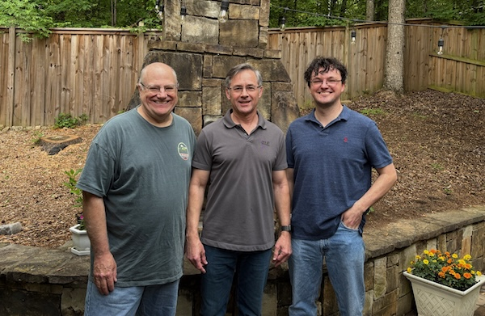

Scrappy/Simpkins Lab for Interactive AI

- thrive verb
- to grow or develop well or vigorously; to flourish; to prosper.
We are interested in advancing a broad range of AI techniques, especially machine learning techniques, and applying them to important problems. We are particularly interested in intelligent agents that interact with complex environments that may include other agents, human or artificial.
Our technical interests include
- multi-agent systems,
- reinforcement learning,
- evolutionary algorithms,
- deep learning,
- quantum computing,
and any technique that is well-suited to a particular problem. We choose our technical approaches by their promise in solving problems that interest us, and choose problems for which we have some technical insight. These problems lie mostly in the following areas:
- AI for American thriving. Decision support for policy makers in a variety of domains, technology for defense applications, technology for industrial applications, development of American AI talent.
- AI for human thriving. Intelligent systems for mental health, activity/motion recognition for fall risk prediction, intelligent decision support for clinicians, AI-driven innovations in health science.
In part, we want to continue the work of the lab the PI came from (Charles Isbell at Georgia Tech), to build AI that is "not just intelligent like people, but intelligent with people."
Collaborators
Because we seek to apply AI to problems in a variety of domains, our work is necessarily interdisciplinary. Please contact Professor Simpkins at christopher.simpkins@kennesaw.edu if you are interested in discussing opportunities.
Funding
We are currently funded with a little bit of the PI's startup funding and a mountain of passion. We are seeking external funding from a variety of agencies.